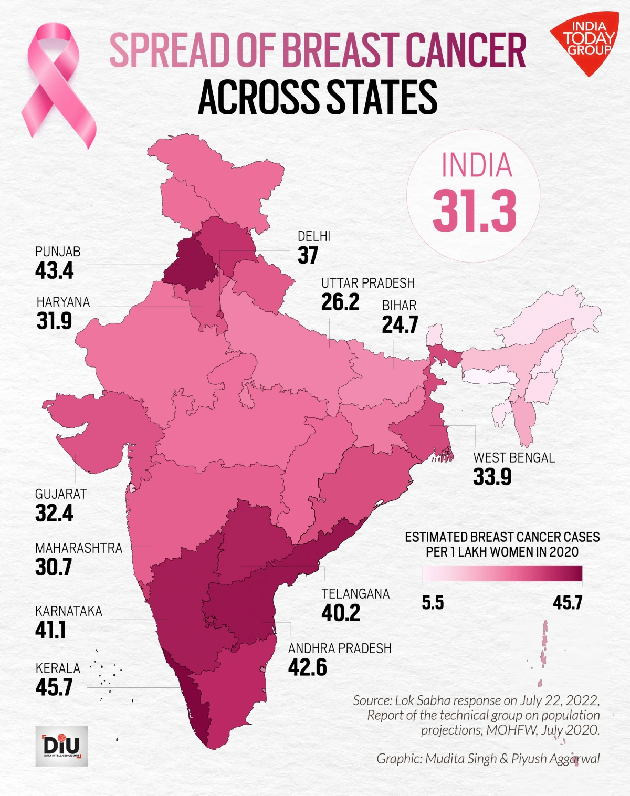

Discover comprehensive data on global and Indian breast cancer cases, annual mortality rates, and the latest trends in women's healthcare. Learn from leading experts and top surgeons for the best advice.
| Statistic | Data | Source / Year |
|---|---|---|
| New Breast Cancer Cases (Worldwide) | 2.3 million | 2020, WHO |
| Breast Cancer Deaths (Worldwide) | 685,000 | 2020, IARC |
| New Cases in India | 162,468 | 2020, ICMR |
| Annual Deaths in India | 87,090 | 2020, ICMR |
| 5-Year Survival Rate (Worldwide) | 90% | 2020, Global |
Visualizing breast cancer cases and mortality trends over the past decade.
